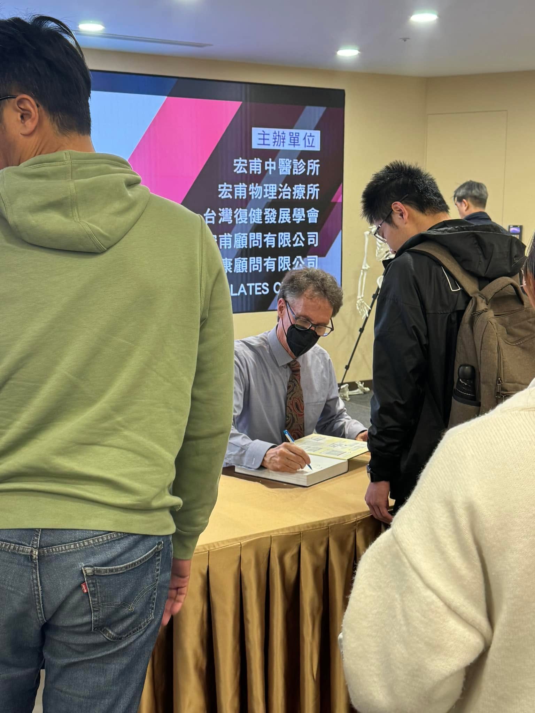

Neumann大師會被稱大師真的無懈可擊，這兩天髖關節的主題，收穫太多太多！
Neumann大師會被稱大師真的無懈可擊，這兩天髖關節的主題，收穫太多太多！
回歸基本，扎穩根本
簡單紀錄一下：
髖伸的活動度非常重要
Lumbar and pelvic two essential kinematic strategies
Triple extension: hip-knee-ankle
Lumbo-Pelvic-Femoral rhythm
Adductors as both flexors and extensors
femor旋轉軸心：使內收肌具備內轉功能
臀肌無力髖關節痛：拐杖vs提重物
Flexing the hip to 90 degrees have on the torque production of the IR
臀大肌練爆！
#肩關節髖關節全套完成✅
#Neumann
